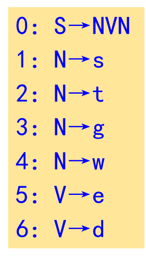
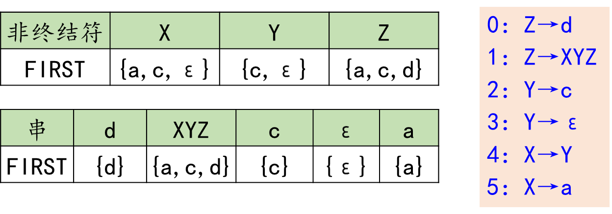

4.3.2.1.1 定义
令G 是一个不含左递归的文法, 对 G的所有非终结符的每个候选 α定义它的终结首符集FIRST(α)为 FIRST(α)={a∣α⇒∗a⋯,a∈VT} 特别的，若α⇒ε，则规定ε∈FIRST(α)。 4.3.2.1.2 求法
若要求FIRST(S)，那么 - 若S→a…，则将a加入FIRST(S)
- 若S→ε，则将ε加入FIRST(S)
- 若S→Y1Y2…Yn，ε∈Fisrt(Yi)(1⩽j⩽n)，则将ε加入FIRST(S)
- 若S→AB…Z，则将FIRST(A)/ε加入FIRST(S)
- FIRST(A)中无ε：停止
- FIRST(A)中有ε：将FIRST(B)/ε加入FIRST(S)，以此往复。
一个例子

First(V)={e,d}First(N)={s,t,g,w}First(S)={s,t,g,w} 另一个例子
